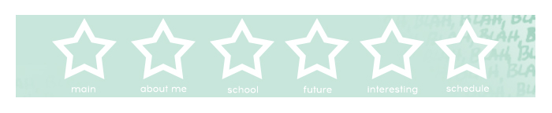
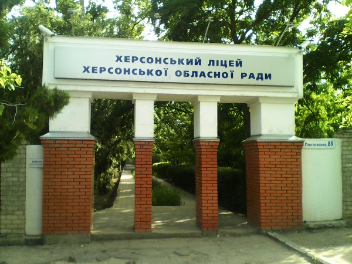

Школа та її вплив на мене

Про школу та що вона мені дала
Останні три роки я навчалася у м. Херсоні, Херсоньскому ліцеї Херсонської обласної ради. Туди я вступила за допомогою спеціального тестування, оскільки сам заклад є державним, і будь-хто вступити туди не может.
Навчання там починається з восьмого або дев'ятого класу. Іспити складаються різні для кожного профіля:
- ТХ (Технічний, раніше - ІТ);
- ХБ (Хіміко-біологічний);
- ФМ (Фізико-математичний);
- ІМ (Іноземні мови);
- Також раніше були ЕМ (Економічний), АК (Академічний), ГМ (Гуманітарний).

Конкретно я навчалася у ІТ, і саме цей профіль дав мені основну базу для того, щоб вступити до вищого навчального закладу за віподвідним напрямком.
Ліцей вирізняється змістом і формами організації навчання, переліком предметів варіативної складової навчального плану, авторських спецкурсів, факультативів та гуртків. Крім цього, ліцеїстам надаються додаткові освітні послуги з курсів за вибором учнів (за батьківські кошти).
З 2002 року у структурі ліцею функціонує Центр дистанційного навчання для учнів сільської місцевості, в межах якого вони отримують якісну освіту поза межами державних стандартів.
У 2000 році в ліцеї започатковано Всеукраїнську учнівську науково-дослідну екологічну експедицію «Дніпро XXI століття», яка проводиться дотепер.
З 2001 року ліцей є експериментальним майданчиком Інституту педагогіки Національної академії педагогічних наук України.
Ліцей — лауреат Всеукраїнського конкурсу «Сто найкращих шкіл України — 2006» у номінації «Школа педагогічного пошуку».
За вагомий внесок у справу творення позитивного іміджу незалежної України у 2006 році ліцей нагороджений дипломом Учасника іміджевого альманаху «Ділова Україна. Шляхи до успіху та визнання».
У 2008 році ліцей виборов перемогу в громадській акції «Флагман сучасної освіти України».
У 2012 році за вагомий внесок у розвиток освіти і науки України ліцей нагороджено відзнакою Загальнонаціонального проекту «Флагман освіти і науки України»
Ліцей для мене - не просто школа. Саме тут я здобула основні навички для самостійного життя, знайшла для себе багато нового, змогла вивчити нові дисципліни, покращила свої соціальні навички та здібності.
Такі необхідні риси потрібні кожному, хто хоче для себе кращого майбутнього. Якщо у когось не було можливості здобути якісну освіту у рідному місті (як у мене), то потрібно шукати нові шляхи для того, щоб покращити якість свого майбутнього.
Ліцей став для мене другою домівкою зі своїми правилами, традиціями та звичками. Саме тут я дізналася про те, що можна досягти чого завгодно, потрібно лише докласти певних зусиль для цього.
Усі питання можна обговорити у листі на моїй пошті.